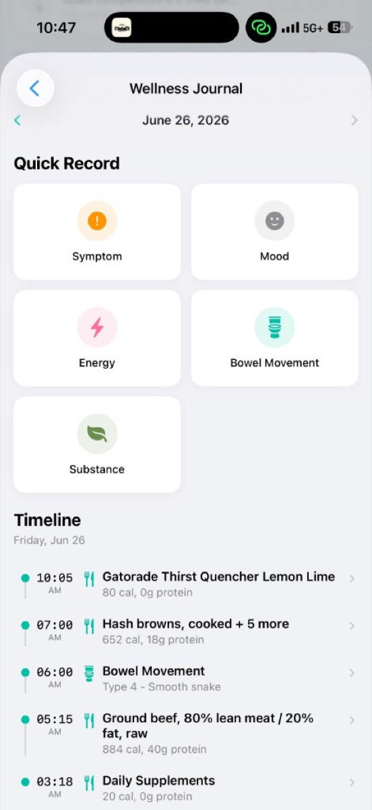

A private operating
model of the body.
Nutrition, glucose, training, sleep, and recovery — connected into one legible model, with the evidence behind every number.
StatsKey · v4.6.9 · iOS & Apple Watch · A wellness & self-tracking tool — not a medical device.
You institutionalized the thing I'm trying to
do honestly at consumer scale.
- Chief Science Officer of the Academy of Nutrition and Dietetics — formerly the American Dietetic Association — from 2000–2012.
- Architect of the Evidence Analysis Library and the Evidence-Based Nutrition Practice Guidelines: graded, transparent, reproducible systematic reviews.
- Drove the Nutrition Care Process and IDNT — the standardized language behind nutrition care and electronic health records.
- Supported the USDA Nutrition Evidence Library behind the 2010 & 2015 Dietary Guidelines for Americans.
StatsKey is built on the instincts you made standard: grade the evidence, expose the provenance, refuse to over-claim, and use a shared vocabulary.
I'm not here to impress you with the AI. I'm here for your judgment on whether the methodology holds — and where it should go next.
Every health app stores one slice — and stops.
Food only
Intake, divorced from what it does to you.
Miles only
Output, divorced from how you fueled it.
A curve only
A glucose trace with no idea what you ate.
A score only
A number with no causal context.
"Your body is a living dataset.
StatsKey makes it legible."
None of them connect the slices. None of them measure your response.
Measure response, not just intake.
Accurate or effortless — almost no one is both.
Verified, but incomplete
~84 nutrients, USDA/NCCDB-verified (±3.5% cal). But un-covered micronutrients are left blank — its own docs warn those values "may be significantly lower than they actually are" — tailoring a value means hand-building a custom food, and key nutrients are dropped from its reports. Accurate ≠ able to find a real deficiency.
Effortless, shallow
Huge crowdsourced or AI-photo capture, but macro-first; micronutrient fields often blank, ~23% sample error, reliability ICC 0.35–0.73.
The missing middle
Low-friction capture plus per-nutrient provenance, AI gap-filling, and the connected model — glucose, training, sleep — none of them have.
NHANES: ~94% of US adults fall below the requirement for vitamin D, ~100% under the AI for potassium, ~52% magnesium, ~44% calcium — even counting supplements. Real, common, and mostly invisible in the apps people actually use.
NHANES 2007–2010 / 2003–2018 (Linus Pauling Institute; 2020 DGAC shortfall nutrients) · independent app comparisons & Morello et al. 2025 (ICC reliability).
Where StatsKey sits — and what only it does.
| Product | Micronutrients | Data source / accuracy | Deficit detection | Grounded AI | Connected model | Blood / stool |
|---|---|---|---|---|---|---|
| StatsKey | 103 modeled · 65+ shown | USDA-grounded + per-nutrient provenance | Yes — %IDR badges | Yes — your records | Food·CGM·train·sleep·GI | Roadmap |
| Cronometer | ~84 · gaps blank | USDA/NCCDB verified · ±3.5% | Targets; blanks skew low | No | Nutrition-centric | No |
| MyFitnessPal | 14–20, often blank | Crowdsourced · ~23% err | No | No | No | No |
| Cal AI | Macro-first | AI photo estimate | No | Photo only | No | No |
| Zoe | Limited | CGM + one-time test | Food scores | Program-bound | CGM + gut test | At-home, gated |
| Function · InsideTracker | Via blood | CLIA labs | Biomarker-based | Some | Labs only, not intake | Blood |
Independent 2026 app comparisons · Morello et al. 2025 (reliability ICC) · vendor materials. StatsKey figures from code & internal evals.
One connected, private model —
plus an AI grounded in your own data.
Six signals most apps keep apart, recorded into one timeline — then Intelligence, an in-app assistant that answers from your records, in plain language, not generic averages.
From diary to decision system — record by photo, barcode, label or text. It even records bowel movements on the Bristol scale, right alongside food, fiber & glucose — a data point almost no consumer app captures, and one you can simply ask the AI about.
One photo becomes a full panel.
Snap a meal, scan a barcode or label, or just describe it. AI identifies the food first; a separate grounded step fills the nutrients — so one flaky lookup can't corrupt a meal.
Energy, macros, 14 vitamins, 14 minerals, 11 fats (incl. EPA/DHA/ALA), 20 amino acids, 7 carotenoids — far past the 14–20 most apps show. Each food carries whatever it has data for.
Label, barcode, USDA-grounded, or AI estimate — plus how sure we are of the amount eaten. Estimates are badged and reversible.
Actual screen recording — the live StatsKey app (English).
Comprehensive nutrient deficit detection.
Intake ÷ reference intake (IDR), graded <50% Deficient · <80% Below · ≤200% Optimal · >200% Excess, across the ~65 nutrients that populate on a typical day — of a 103-nutrient model.
Most trackers leave un-covered micronutrients blank, so a nutrient reads low when the data is just absent — Cronometer's own docs warn those values "may be significantly lower than they actually are." StatsKey fills the tail (AI, badged & reversible) and grades provenance, so "low" means low intake — and any value is editable, with the whole record exportable.
The reference is still one adult column today. Personalising by sex, age, life-stage & upper limits is where your judgment matters most.
English recreation of the live Insights → Micronutrient status screen.
Glucose is one connected signal — and the AI reads your record.
The same meal's actual effect on you: incremental AUC, peak, recovery, second-meal effects — Dexcom, Libre or Nightscout, never the headline.
Answers from your own data; cites methods; refuses to fabricate numbers.

The gut: huge, multifactorial — and the hardest thing to talk about.
~40% of people have a disorder of gut–brain interaction (>1 in 4 US adults by Rome IV); ~12% have IBS. 70% of them name food as a trigger — but every trigger list is individual.
In a US study, >60% of patients hid bowel-urgency symptoms from their own doctor out of embarrassment. The field even renamed "functional GI disorders" → "gut–brain interaction" to cut the stigma.
A judgment-free record that sits in the same timeline as food, fiber, glucose and training — so you can simply ask the AI "what's driving this?" and it reasons over your own data for the n-of-1 pattern a recall-biased, hand-skimmed paper diary misses. No one has to say a word.
NIDDK (IBS ~12%) · Rome IV DGBI epidemiology (Sperber 2021; Palsson 2020) · Lilly CONFIDE (bowel-urgency underreporting) · FAST & ESM diary studies on recall bias.
Structured, typed, and physiologically aware.
~30 typed collections, per user
Meals, glucose, workouts, sleep, vitals, weights, body metrics, wellness, water — each a defined schema, not a freeform blob.
Meal → FoodItem → a 103-nutrient model
Eight categories: energy, macros, 14 vitamins, 14 minerals, 11 fats/lipids (incl. EPA/DHA/ALA), 20 amino acids, 7 carotenoids — ~65 populate on a typical day.
A clinically-aware profile
BMR/TDEE via a Mifflin–St Jeor–led 3-formula ensemble; Fitzpatrick skin type → vitamin-D synthesis; allergies, intolerances & conditions feed the AI.
Macro targets are versioned with append-only snapshots — so intake is always compared to the target that was active at the time, never silently rewritten. The history is auditable.
We store a number and how it was known.
Every food record carries a three-axis trust model — three independent kinds of evidence, each graded by its own confidence.
Identity
What food is this?
barcode match · label · visual recognition · grounded search
Nutrients
Where do the values come from?
barcode DB · official label · USDA grounded · AI estimate
Quantity
How sure are we about the amount eaten?
user-adjusted · label serving assumed · visual estimate
"A barcode or label can strengthen the source of nutrition facts without proving the user consumed the default serving."
— design comment, FoodItem trust model · This is evidence grading, applied to consumer food records.
Grounded in USDA data — and built to say
"I don't know" instead of inventing.
USDA FoodData Central (SR Legacy)
The primary nutrient source is the USDA database accessed via grounded search — the same evidence base you supported for the Dietary Guidelines — not model guesswork.
No fabricated labels
For branded/packaged items, the system never estimates label values. If the official label can't be verified, it returns an empty nutrients object rather than invent one.
Identify first, enrich separately
Food identity and nutrient lookup are decoupled, so "one flaky lookup can't corrupt a meal."
Estimates are labeled & reversible
AI micronutrient fills are visibly flagged and can be undone — never silently mixed into "fact."
Filling the tail vendors leave blank — and grading it.
Most foods arrive with macros and a few minerals; the rest of the panel is empty. StatsKey uses AI to estimate the missing micronutrients — merged only into blank fields, every value badged and one-tap reversible, never overwriting a measured number.
Measured in our own eval harness (internally, "the cage") against USDA ground truth: generics 0% median error / 83% coverage via exact USDA pull, branded labels ~7% mean error, the micronutrient tail ~8%.
The fill shipping today is the model's own knowledge, not retrieved; the USDA-grounded cascade is built and eval-validated as the near-term default. Thresholds are coarse and male-referenced today.
What your guidance could shape: personalized inadequacy — sex, age, life-stage, upper limits — grounded enrichment by default, and closing the loop: estimated intake validated against biomarkers via the lab panels.
Photo portions are the known weak link — independent 2025 studies put general vision-LLM energy error at ~25–40% (macros worse); our trust model encodes that as low quantity confidence.
No fake percentiles. Cited methods, named sources.
"Never show a percentile unless the source actually supports percentile interpretation."
Personal history, friend comparisons, and external references are kept distinct — never blended into an invented number.
- Glucose response: trapezoidal iAUC above a personal baseline, with a valid-rise check — grounded in free-living CGM research (PREDICT/ZOE; ADA/ATTD; Staub–Traugott).
- Amino-acid reference intakes: WHO/FAO/UNU 2007.
- Energy expenditure: Mifflin–St Jeor (within a 3-formula BMR ensemble).
Disciplined about the line between
wellness and medicine.
Wellness, not a device
StatsKey does not diagnose, treat, or replace clinical judgment. The AI is told not to diagnose, prescribe, or claim certainty from correlation.
Strictest setting wins
Sensitive records — GI, symptoms, wellness — are never friend-visible by default. Data is never sold. Export or true deletion anytime (GDPR Art. 17 / CCPA).
Trauma-informed tracking
Bristol Stool Scale and symptom recording follow a peer-reviewed internal memo (PMC / JMIR / PLOS Digital Health) — no gamifying serious body data.
This restraint is a feature, not a limitation. The credibility of the wellness claim depends on not pretending to be the clinical one.
What's real today — and what isn't yet.
- Clean, multi-source ingest across food, CGM, training, sleep, wellness.
- Deep, mature training analytics (GPS, HR zones, load/recovery).
- Graded, USDA-grounded nutrition with provenance.
- An AI that accurately narrates a user's own recorded data.
- The "coherent model of you" is today largely an LLM narrating fetched data — not a validated physiological model.
- Current glucose "response" is still a simple delta heuristic, not a fitted curve.
- No app-population norms yet (deferred until they can be done with real privacy thresholds).
The named moat is to build a real n-of-1 statistical layer — and stop over-claiming until it exists.
From legible records → validated inference → a body-intelligence platform.
Make recording a durable habit
- Deepen week-one retention; recording that survives.
- Clean, exportable reports for the user, a coach, or a clinician.
- Scrub residual over-claims; tighten provenance UI.
Make the "model of you" real
- The validated n-of-1 statistical layer (the moat).
- The AI as a daily companion: "why am I dragging this week?"
- Adaptive targets that move with load & recovery.
- Self-hosted USDA / Open Food Facts mirror — compliant, free, grounded.
Interpret biology against behavior
- At-home blood & stool panels read against nutrition, CGM & training — via a CLIA/CAP partner lab.
- Clinician / coach portal.
- Considered partnership & international expansion.
The through-line: every horizon adds interpretation on top of signals we already ingest cleanly — never claims ahead of evidence.
From estimated intake to measured biology — and back.
Estimate
Recording + deficit detection flag likely shortfalls — vitamin D Deficient, fiber Below Target — from food alone.
Measure
At-home blood & stool kits via a CLIA/CAP partner lab confirm what intake can only estimate.
Read against behavior
Labs interpreted against your nutrition, CGM, training & sleep history — not isolated numbers on a portal.
Adjust & re-measure
One targeted change, then retest — a personal, longitudinal feedback loop on the actual body.
Lipids incl. ApoB; fasting glucose, HbA1c, insulin; hs-CRP; ferritin/iron; vitamin D, B12; TSH; comprehensive metabolic panel.
Validated stool microbiome + calprotectin inflammation — conservative, symptom-linked, no over-claiming from composition alone.
Estimated intake → measured status → personalized correction → re-measure. No calorie app and no lab company does the whole loop — that's the opening.
Year-1 stays out of assay development: partner labs test under CLIA/CAP; StatsKey owns ordering, ingestion, interpretation & education — within the wellness boundary.
A consumer data stream a dietitian can
actually read, trust, and act on.
Toward IDNT alignment
StatsKey already keeps a rigorous internal data dictionary. The natural next step is mapping our nutrition records toward standardized nutrition & dietetics terminology — so the data is interoperable and clinically legible, not a proprietary silo.
Reports shaped by the Nutrition Care Process
Structure "clinical-grade reports" around assessment → diagnosis → intervention → monitoring & evaluation, so what a client brings to a session fits how dietitians already think.
The opportunity: graded, sourced, between-visit data — delivered in the profession's shared vocabulary, not yet another app's private one.
Your judgment, not your endorsement.
Pressure-test the grading
Critique our provenance model and scientific-honesty rules the way EAL pressure-tests a conclusion statement.
Define defensible claims
Help design how we'd responsibly validate an n-of-1 statistical layer — what's claimable, what's over-reach.
Align to the standards
Advise on mapping our data dictionary and reports to standardized language and the Nutrition Care Process.
Keep us honest
Hold the wellness/medical line and flag where copy or features drift past the evidence.
Framing: advisory and cause-first — low-pressure, exploratory, and shaped around your time. We can start with a single domain (e.g. the provenance model) and see if it's a fit.
Most apps store records.
StatsKey is trying to build a model.
Graded, sourced, and legible. I'd like your help making the intelligence real — and the science unimpeachable.
Wellness & self-tracking — not a medical device. AI estimates are approximate.
Reference sheet
- iOS + Apple Watch (Swift/SwiftUI), v4.6.9
- Firebase + Cloud Functions (Node 22), ~50 functions
- Multi-LLM: Gemini, Claude, OpenAI, Grok
- Metered AI via a token ledger
- Energy 2 · Macros 10 · Vitamins 14
- Minerals 14 · Fats/Lipids 11 (EPA/DHA/ALA)
- Amino acids 20 · Carotenoids 7 · Other 25
- USDA FoodData Central (SR Legacy)
- Mifflin–St Jeor (BMR ensemble) · WHO/FAO/UNU 2007
- Trapezoidal iAUC (PREDICT/ZOE, ADA/ATTD)
- Bristol Stool Scale · Fitzpatrick · WMA age-grading
NHANES / WWEIA · Cooper Institute / ACSM · RunRepeat (~35M race results) · AASM / SRS · CDC / HHS guidelines.
Free core; for new U.S. iOS customers, optional Pro ($9.99/mo or $79.99/yr) and Pro+ ($24.99/mo or $199.99/yr); platform, region, and legacy-subscriber pricing may differ; AI token packs. Wellness & self-tracking tool — not a medical device; not for diagnosis or treatment.
Dr. Esther F. Myers, PhD, RDN, FAND — CSO, Academy of Nutrition and Dietetics (formerly American Dietetic Association), 2000–2012; architect of the Evidence Analysis Library, NCP & IDNT; 2020 Marjorie Hulsizer Copher Award.